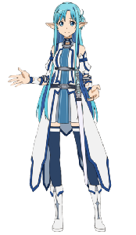
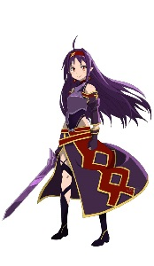

簡介
在「死槍事件」結束的數週後，在某次ALO大型改版中，導入了嶄新的「原創劍技」系統。此時，ALO的艾恩格朗特第24層，出現一為謎樣的女孩，以自己所創造的十一連擊原創劍技作為賭注，與別人進行決鬥。擊敗包含桐人在內的60名玩家，進而獲得「絕劍」的稱號。
亞絲娜也對這位擁有比桐人更快反應速度的玩家產生興趣。在亞絲娜與她對決後，這名女孩邀請亞絲娜加入自己的隊伍，並拜託亞絲娜一件讓亞絲娜意想不到的事情。同時也意外的牽扯出這名女孩背後一連串的故事...
主要角色

亞絲娜，本名結成明日奈，種族為水精靈，武器為單手細劍，在ALO中也會作為補師協助桐人等人，至於在攻擊方面也十分強勁，因而獲得「狂暴補師」這一別名。

有紀，本名紺野木綿季，種族為闇精靈，武器為單手劍，因持有獨創技能，並打敗眾多挑戰者，因而獲得「絕劍」這一別名。
小說
作者為川原礫，單行本日版由電擊文庫出版，繁體中文版由台灣角川出版。
第七卷
日文版:2011年04月10日
繁體中文版:2011年11月02日
動畫
2012年7月動畫開播。第七卷的聖母聖詠篇、幽靈子彈篇及外傳斷鋼聖劍篇，共24話，在第18集進入聖母聖詠篇。
音樂
片頭曲 《courage》 作詞、作曲：Nori，編曲：古川貴浩 歌：戶松遙
片尾曲 《シルシ》 作詞：LiSA，作曲：カヨコ，編曲：堀江晶太 歌：LiSA